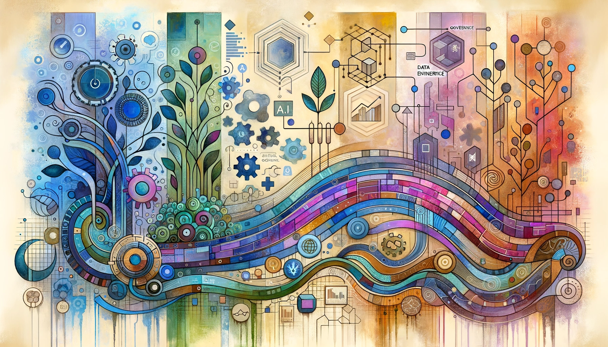

Eric J Ma's Website
written by Eric J. Ma on 2026-05-27 | tags: standardization onboarding roi adoption ai hiring workflows structure tooling culture
In this blog post, I reflect on co-teaching a BioIT World workshop about the value of standardizing data science workflows. I share stories from my experience at Moderna, discuss how to choose what to standardize, and highlight the importance of people and culture in making standards stick. I also touch on how evolving technology and AI are lowering the cost of standardization. Curious about where to start and how to get your team on board?
Read on... (2086 words, approximately 11 minutes reading time)written by Eric Ma on 2026-05-20 | tags: measurement llms evaluation reliability engineering science expertise tools roles product
In this blog post, I reflect on the evolving role of data scientists in the age of AI and LLMs. I argue that our core mission remains rigorous measurement, not full-stack development. While AI tools make building easier, the real value comes from defining and evaluating what truly matters. I share why measurement should be led by those closest to the problem and how data scientists can best contribute. Are we losing sight of what makes data science essential in the rush to build with AI?
Read on... (2136 words, approximately 11 minutes reading time)written by Eric J. Ma on 2026-05-10 | tags: agentic conference llm data mlops applied governance workforce strategy systems

In this blog post, I share my experiment at ODSC East 2026, where I analyzed talk abstracts to uncover the conference's true zeitgeist. By categorizing sessions into five key zones—agentic AI systems, LLM engineering, data infrastructure, applied AI, and governance—I reveal how AI builder culture is evolving into systems culture. I also reflect on my own workshop experience and the shifting focus from models to repeatable systems. Curious about what trends are shaping the future of AI conferences?
Read on... (1863 words, approximately 10 minutes reading time)written by Eric J. Ma on 2026-05-02 | tags: burnout anxiety mindfulness technology wellness balance stress reflection connection perspective
In this blog post, I share my personal journey through AI-related burnout, the anxiety and exhaustion it brought, and the steps I took to recover—like changing my environment, reconnecting with family, and resetting my perspective on time and productivity. I also offer practical tips for anyone feeling overwhelmed by the relentless pace of AI work. Curious about how a week in London and some simple lifestyle changes helped me regain balance?
Read on... (2343 words, approximately 12 minutes reading time)written by Eric J. Ma on 2026-04-08 | tags: marimo benchmarking llm notebooks automation evaluation opensource experiments cost markdown
In this blog post, I share my experience benchmarking several LLMs using the new Marimo Pair skill for a data analysis task. I tested models like Claude Opus, Sonnet, GLM-5.1, and others, evaluating their performance, cost, and adherence to coding instructions. Some models excelled, while others struggled with basic requirements. Curious to see which models stood out and what lessons I learned from this experiment?
Read on... (3445 words, approximately 18 minutes reading time)written by Eric J. Ma on 2026-04-04 | tags: productivity burnout attention feedback calibration multitasking exhaustion kanban workflow ai
In this blog post, I reflect on how AI tools have accelerated my coding workflow but also made it more exhausting by collapsing my attention span and pushing me to juggle too many tasks at once. I explore why our brains are now the bottleneck, and share strategies for calibrating our work pace to match our neural capacity for sustainable productivity. How can we harness AI's power without burning out or losing focus?
Read on... (1785 words, approximately 9 minutes reading time)written by Eric J. Ma on 2026-03-29 | tags: ai llm coding architecture plugins opencode tools
I vibe-coded canvas-chat into existence in 48 hours, then spent weeks untangling the mess into a clean plugin architecture. The AI could execute my architectural vision, but it couldn't design it. This is the story of how I recovered from AI-generated slop — and why the architecture stays human.
Read on... (1319 words, approximately 7 minutes reading time)written by Eric J. Ma on 2026-03-25 | tags: mentorship leadership coaching networking growth development creativity teamwork community learning
In this blog post, I share practical ways to grow as a mentor and leader even when budgets are tight. Drawing from my experiences at Novartis and Moderna, I discuss strategies like one-on-one coaching, presenting at internal events, organizing communities of practice, and hosting informal gatherings—all without extra spending. I also offer advice for managers on supporting these efforts. Want to discover how you can foster career growth and mentorship, no matter the economic climate?
Read on... (1067 words, approximately 6 minutes reading time)written by Eric J. Ma on 2026-03-15 | tags: automation efficiency airgaps workflow processes agents imagination skill mapping labs
In this blog post, I explore the concept of "air gaps"—those manual steps in business or scientific processes where humans bridge the gap between digital systems. I share real-world examples from labs and software workflows, discuss why these gaps matter, and offer practical advice on identifying and closing them with automation and coding agents. Curious how closing even small air gaps can transform your team's efficiency and free up mental bandwidth?
Read on... (2069 words, approximately 11 minutes reading time)written by Eric J. Ma on 2026-03-14 | tags: automation documentation workflow context dependencies github obsidian productivity skills structure agents
Workflow-specific agent skills don't just automate tasks — they encode how you work, down to your tools, your file structure, and your philosophy. I explore this through two examples: a daily sign-off skill that inherits my Obsidian setup and bullet journal structure, and a scientific EDA skill that goes further, encoding a whole epistemology of how analysis should proceed. I argue there are three layers of implicit assumptions in any workflow skill — tool dependencies, organizational preferences, and epistemic preferences — and that the last one is the hardest to see and the most important to document.
Read on... (1086 words, approximately 6 minutes reading time)